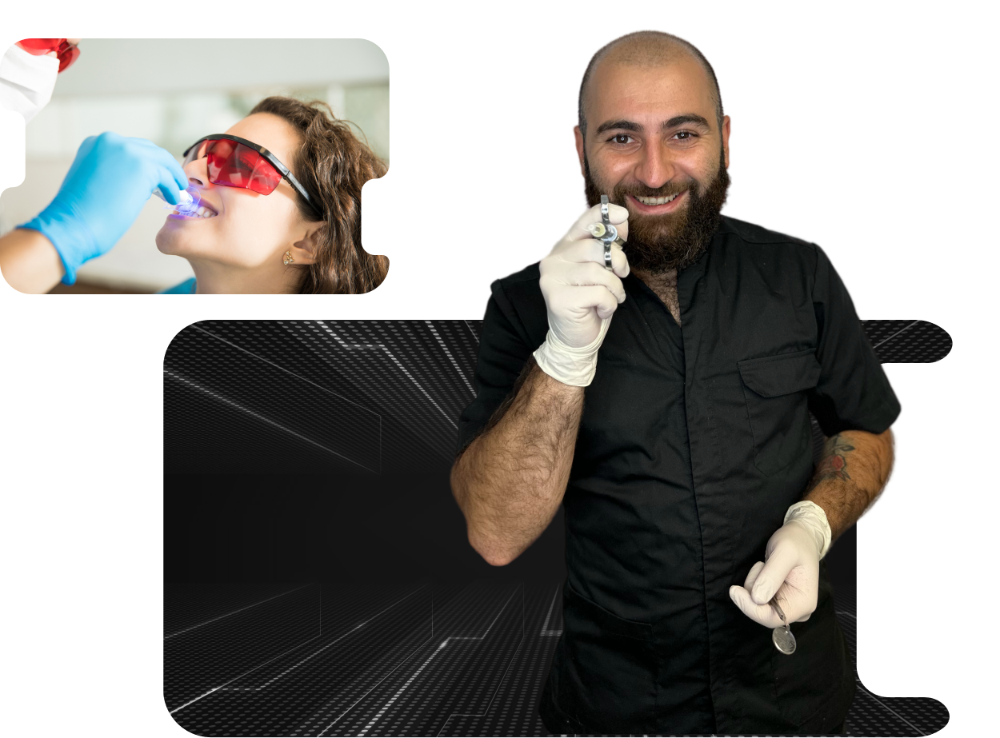
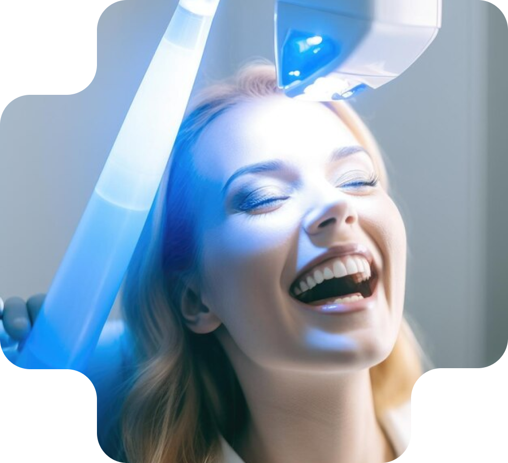
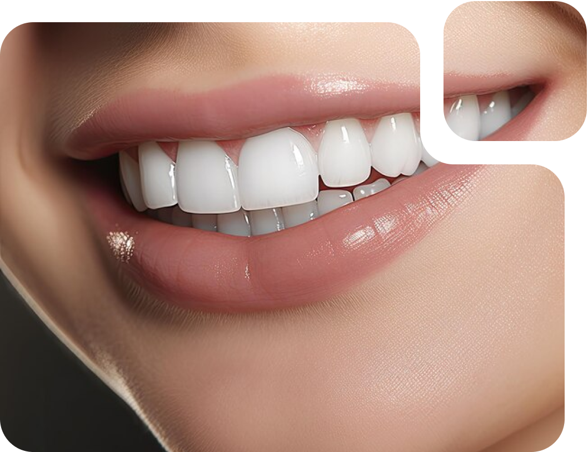
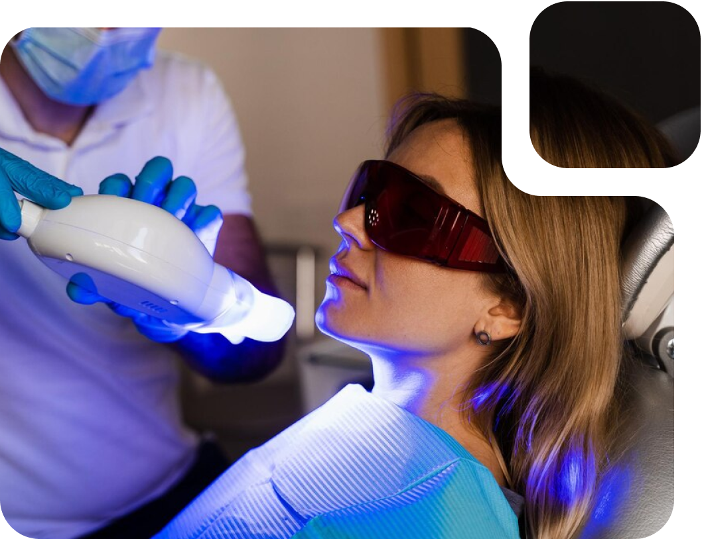
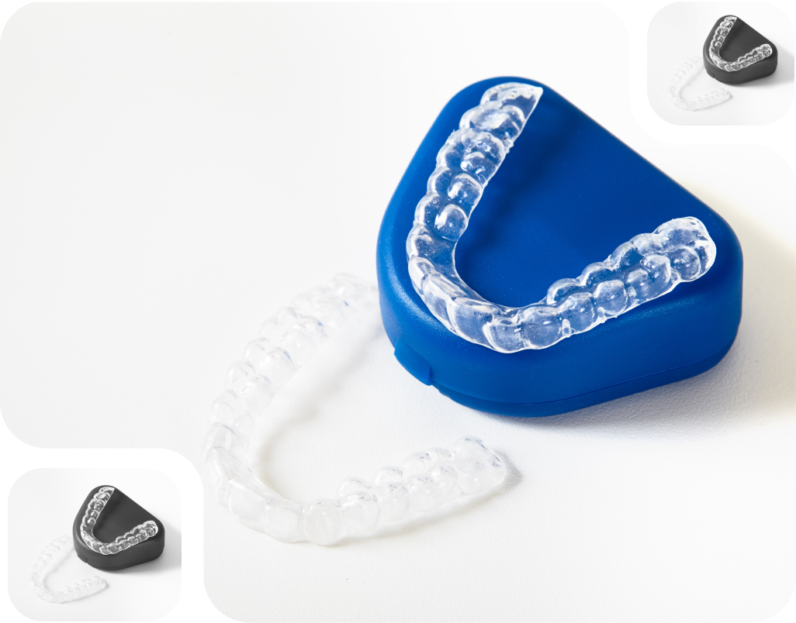
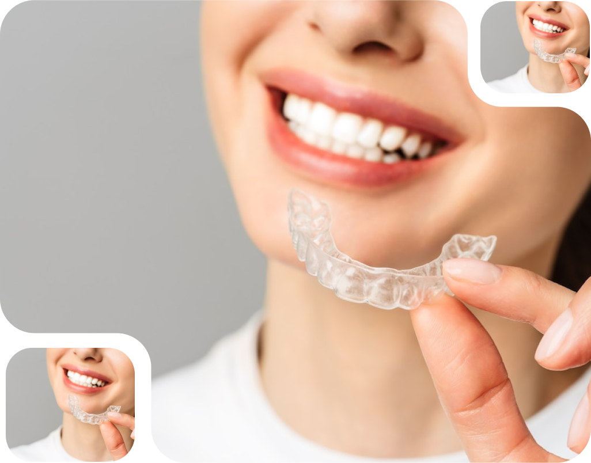
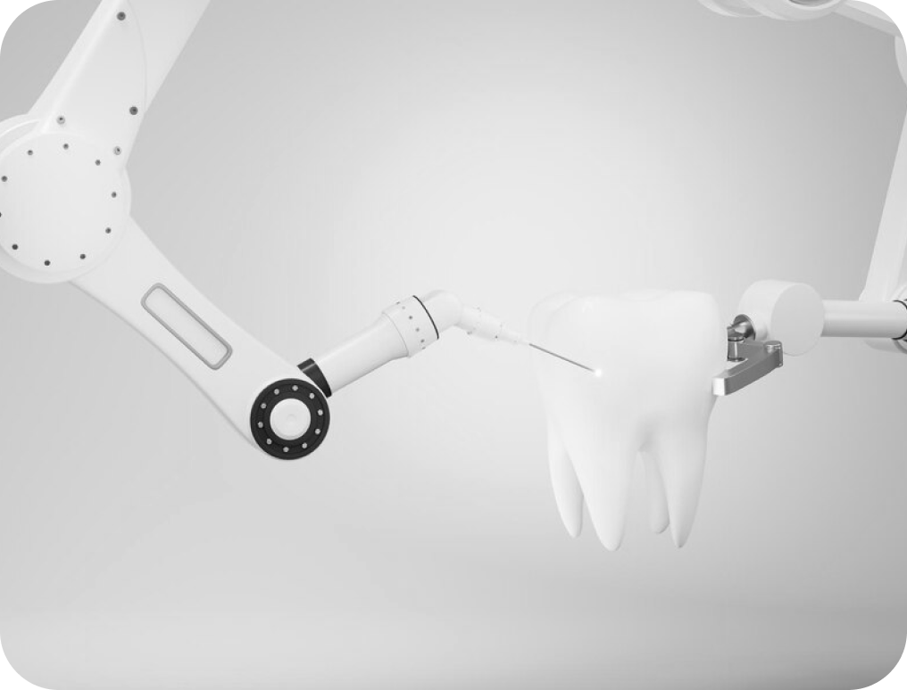

Відбілювання зубів — це освітлення і вирівнювання
тону зубної емалі, видалення пігментів з верхнього шару дентину
Хто не хоче собі осліплюючи ідеально білу посмішку? Відбілювання зубів є однією з найбільш
популярний стоматологічних процедур, що проводяться щороку та допоможе вам отримати ідеально білі
зуби.
З часом кава, чай і червоне вино можуть стати основними винуватцями виникнення плям. Що в них
спільного? Інтенсивні кольорові пігменти, які мають назву хромогени, що прикріплюються до білої
зовнішньої частини вашого зуба, тобто емалі.
Також куріння та вживання жувального тютюну значно сприяє погіршенню кольору. Дві хімічні
речовини (смола і нікотин), що містяться в тютюні, створюють стійкі плями. Смола від природи
темна. Нікотин безбарвний, поки він не змішається з киснем. Далі він перетворюється на жовтувату
речовину з поверхнею.

«Відбілювання» зубів визначається як будь-який процес, який робить
зуби білішими.
«ВІДБІЛЮВАННЯ ЗУБІВ ШКОДИТЬ ЕМАЛІ!”- така помилка має місце, через те, що застарілі методи
відбілювання могли викликати чутливість, а використання непрофесійних засобів, які можна придбати
на „AliExpress“ чи будь-яких інших сайтах, дійсно приводили до погіршення стану посмішки, а інколи
й видалення деяких зубів.
Професійне відбілювання зубів — це процедура спрямована на зміну кольору зуба за допомогою
нешкідливих для здоров’я відбілюючих гелів.
Процедура відбілювання зубів — це нескладний процес. Відбілюючі засоби містять один з двох
відбілювачів зубів (перекис водню або перекис карбаміду). Ці відбілювачі розбивають плями на менші
шматочки, що робить колір менш концентрованим, а ваші зуби яскравішими.

Чи діє відбілювання на всі типи зубів?
Ні, не діє. Саме тому важливо поговорити зі своїм стоматологом, перш ніж прийняти рішення про
відбілювання зубів, оскільки відбілювачі можуть не виправити всі типи знебарвлення. Наприклад,
жовті зуби, частіше всього добре піддаються відбілюванню, коричневі зуби можуть не реагувати так
само добре, однак все ще відбілюватись. А зуби з сірими тонами можуть взагалі не піддатись
відбілюванню.
Така процедура зовсім безкорисна і не спрацює на капах, вінірах, коронках або пломбах.Також не
буде жодного ефекту, якщо зміна кольору ваших зубів пов’язана із прийомом лікарських препаратів
або травмою зуба.
Стоматолог допоможе підібрати індивідуально для вас найкращі варіанти відбілювання та
контролювати план лікування, щоб уникнути ускладнень.

Відбілити зуби можна двома способами: клінічне відбілювання і домашнє відбілювання.
Показання до відбілювання:
Естетичні переваги
Вікове потемніння кольору зубів
Флюороз (плями на зубах)
Потемніння зуба в результаті видалення нерва
Відбілювання зубів, проведене стоматологом, може зробити зуби яскравішими на декілька тонів.
Відбілюючий розчин зазвичай набагато сильніший, ніж домашні набори, тому ефект від них значно
яскравіший.

Клінічне відбілювання полягає в тому, що лікар наносить на зуби
спеціальний відбілюючий гель і активує його за допомогою ультрафіолетового світла протягом 15-20
хвилин і повторює процедуру три рази.
Загалом, вся процедура займає не більше години вашого часу.
Під час відбілювання зубів використовується захисний бар’єр, який тримає ваші губи, ясна та язик
подалі від відбілюючого гелю, щоб він залишався на місці на ваших зубах. Якщо ж у вас болить язик чи
ясна після процедури, варто проконсультуватися у вашого стоматолога.
Домашнє відбілювання зубів
Домашнє відбілювання полягає в тому, що лікар-стоматолог виготовляє пацієнтові капи на зуби, в
які наноситься відбілюючий гель, і пацієнт надягає таку капу щодня протягом. Час тримання її на
зубах від 20 до 40 хвилин, в залежності від концентрації гелю та індивідуальних особливостей.
Тримання гелю довше зневоднює зуб і може підвищити чутливість зубів.

Капи для відбілювання зубів
Капи забезпечують тісний контакт відбілювача із зубами для досягнення найкращих результатів, вони
запобігають розведенню відбілювача слиною та зводять до мінімуму кількість відбілювача, який може
витікати та, можливо, дратувати ясна.
Терміни такого відбілювання зазвичай складають 10-14 днів.
Ціна відбілювання зубівВартість капи 2000 грн + гелю 2500 грн
Максимального і довгострокового ефекту можна досягти комбінацією клінічного і домашнього
відбілювання.

Процедура ремінералізації
Після відбілювання рекомендується провести процедуру ремінералізації зубів для зміцнення емалі й
зниження чутливості. Звичайно ж, для закріплення результату, перший час необхідно дотримуватися
білої дієти, 3 дні не вживати ніяких продуктів які можуть забарвити зуби.
Процедура ремінералізації зубів в нашій клініці коштує 3000 грн.
Незалежно від того, використовуєте ви домашню систему відбілювання зубів або відбілюєте зуби у
стоматолога, підтримувати результати можливо чистячи зуби щіткою, ниткою та полоскаючи їх щодня.
Також намагайтесь уникайти кислих і багатих таніном продуктів і напоїв, наприклад таких як, кава,
чай, вино, спортивні та газовані напої, ягоди яскравого забарвлення тощо.
Чи є якісь побічні ефекти
від процедури відбілювання зубів?
Деякі люди, які використовують відбілювачі зубів самостійно, можуть відчувати чутливість зубів.
Це відбувається, коли перекис у відбілювачі проникає через емаль до м’якого шару дентину і дратує
нерв вашого зуба. У більшості випадків чутливість є тимчасовою. Ви можете відкласти лікування, а
потім спробувати знову.
Надмірне використання відбілювачів також може пошкодити зубну емаль або ясна, тому обов’язково
дотримуйтесь інструкцій і поговоріть зі своїм стоматологом.
Запам’ятайте, що незалежно від того, який спосіб відбілювання ви оберете, результати не
триватимуть вічно. Їжа, напої, куріння та ліки можуть повторно забарвити зуби та значно скоротити
видимий ефект від процедури. Незалежно від того, який засіб для відбілювання ви виберете, потрібен
догляд, дбайливе ставлення та регулярне відвідування стоматолога.
Будь-який спосіб відбілювання зубів буде неефективним, якщо зміна кольору зубів викликана
прийомом ліків або травмою зуба.

Для додаткової індивідуальної консультації та підбору правильного способу відбілення — запишіться
на безкоштовну консультацію за номером телефону +380500230145